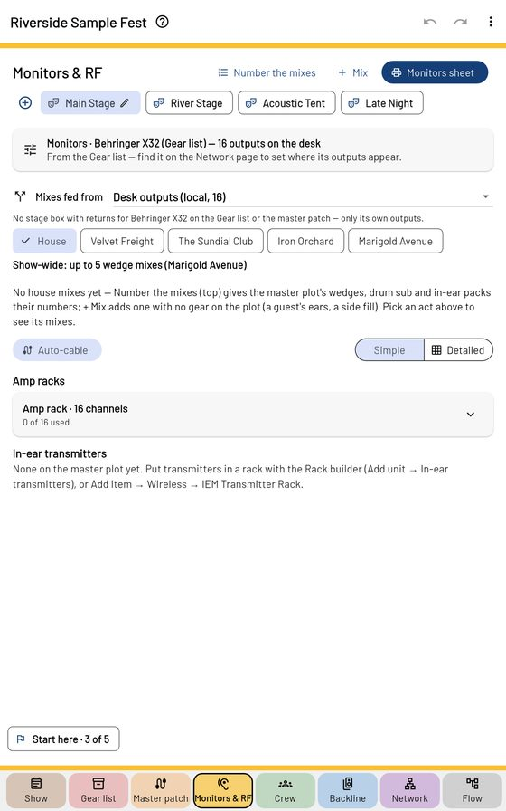

Monitors & RF

Each mix — wedges, in-ears, side fills — and where it leaves the desk (desk outputs, a stage box's returns, or both: Mixes fed from), then the amp channel or transmitter it feeds. Pick House or an act at the top; Number the mixes numbers the house's.
- Amp racks: passive wedges on amp channels; powered ones take the line.
- In-ears: transmitters and their packs; a stereo mix takes two buses.
- The patch-bay grid and the cabling grid show it all at once.
- RF batteries shows packs that are low or not heard.
- Monitors sheet prints it for the monitor engineer.